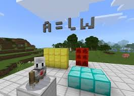
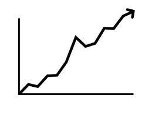

Cat
Minecraft math experiment
The Minecraft math experiment was a scientific test to see if minecraft could teach math to youth faster. There were two groups of children in the test, one that would use minecraft and one that would use the traditional way to teach maths. The minecraft group used blocks to show how the numbers were found. ie. the volumn of a cube from the three dimensions.
The hypothesis was that the children using minecraft would be able to learn maths faster. They would not just be able to do the maths equations, but understand the components in the equation and be able to come up with their own equations.


The results
The children that used minecraft to learn maths had around 50% better results than the children that used the traditional method. This means that the hypothesis was proven correct.
Because the children had a 3D space to experience and solve the math problems, they ended up understanding what was happening better. This allowed them to create their own formula for equations that they hadn't been taught the answer to.
Conclusion
When Video games are used in a creative and educational way, they can help us learn and understand. Minecraft is no exeption to this, as it is a world full of geometry and math. When used in the right way, Minecraft could teach maths better than a traditional classroom could and it helps people to understand the rules, rather than the formula. When youth are taught the rules of math over the formula, they develop a greater understanding of how the formula work and how to make their own formulae.
This is but one of many good parts of video games.